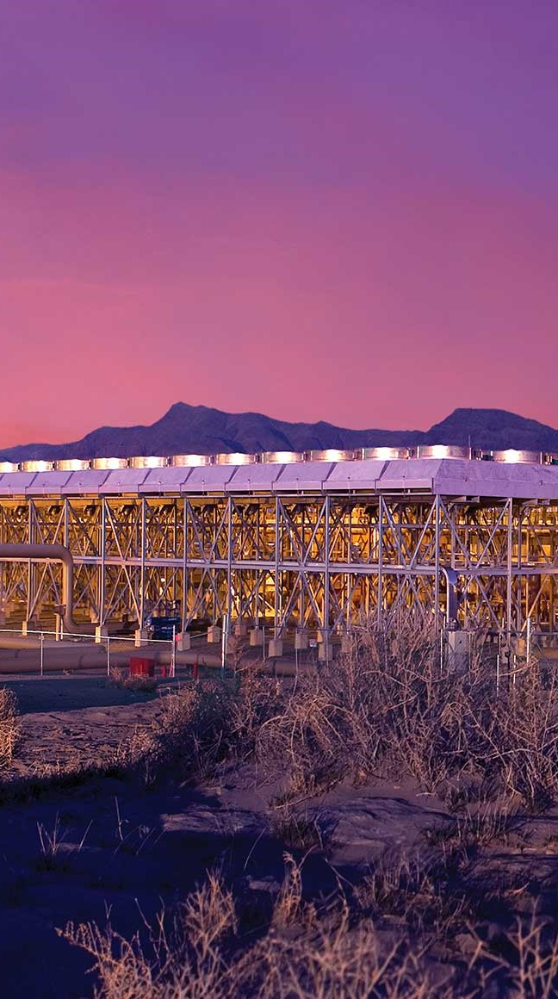
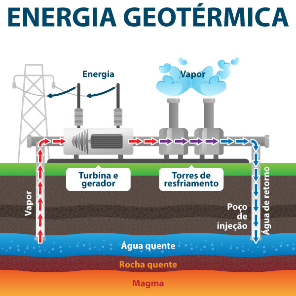

ENERGIA GEOTÉRMICA
CALOR DA TERRA? 🌎
Uma usina geotérmica utiliza o calor interno da Terra para gerar eletricidade. Esse calor é proveniente principalmente do decaimento natural de elementos radioativos e do calor residual da formação do planeta. Para capturar essa energia, as usinas geotérmicas exploram reservatórios subterrâneos de água quente e vapor, que podem ser encontrados em regiões vulcânicas, áreas de falhas tectônicas ou locais onde o magma está mais próximo da superfície. Veja como funciona uma usina geotérmica :

BENEFÍCIOS
- Renovável e Sustentável Fonte Inesgotável: O calor da Terra é continuamente gerado, tornando a energia geotérmica praticamente inesgotável. Baixo Impacto Ambiental: Embora haja algum impacto ambiental durante a construção de usinas, em geral, a extração de energia geotérmica não esgota os recursos naturais.
- Baixas Emissões de Gases de Efeito Estufa A produção de energia geotérmica emite muito menos gases de efeito estufa em comparação com a queima de combustíveis fósseis. Isso contribui para a redução do aquecimento global e da poluição atmosférica.
- Disponível 24 horas por dia Ao contrário de fontes como a solar ou eólica, a energia geotérmica está disponível continuamente, independentemente de condições climáticas ou da hora do dia. Isso a torna uma fonte confiável de energia.